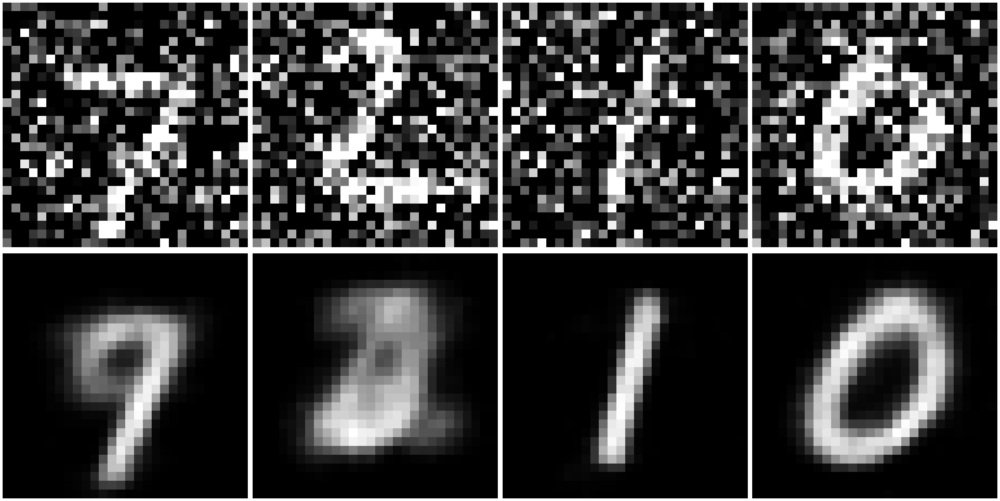

Autoencoders &
Representation Learning
Unveiling structural latent variables through targeted dimensional bottlenecks.
The Essence of Representation
Raw high-dimensional inputs are highly redundant and noisy. Representation learning simplifies this space by extracting the core factors of variation.
- Feature Condensation: Distills complex signals into compact structural vectors.
- Signal Isolation: Discriminates structural data geometries from background artifacts.

The Manifold Hypothesis
Natural entities inhabit minuscule coordinates within vast mathematical spaces. For instance, a $256\times256$ RGB image occupies:
Manifold mechanisms exploit this by mapping only valid physical data topologies.
The Encoder Network
The encoder runs deterministic non-linear reductions, map-compressing input instances down into code spaces.
- Constructs dense architectural mappings.
- Saves localized geometric properties.
The Information Bottleneck
- Selective Filtering: Aggressively discards noise, retaining only features critical for reconstruction.
- Compact Manifold: Maps high-dimensional input to a low-dimensional latent space, capturing underlying structural variance.
- Capacity Constraint: Forcing data through a restricted bottleneck prevents identity memorization, enforcing generalization.
Constraint drives abstraction.
The Decoder Network
The decoder forms an expanding synthesis step, mirroring the encoder to up-project internal states back into full input coordinates.
- Reconstructs raw structural forms from low-dimensional representations.
- Maintains consistency with the targeted data distribution.
Modular PyTorch Blueprint
class Autoencoder(nn.Module):
def __init__(self):
super().__init__()
self.encoder = nn.Sequential(
nn.Linear(784, 128),
nn.ReLU(),
nn.Linear(128, 32)
)
self.decoder = nn.Sequential(
nn.Linear(32, 128),
nn.ReLU(),
nn.Linear(128, 784),
nn.Sigmoid()
)
def forward(self, x):
return self.decoder(self.encoder(x))Autoencoder Loss
Optimization minimizes structural distortion by penalizing coordinate distance deviations between source inputs and reconstructions.
Robustness via Denoising
Denoising layers add stochastic noise fields to data before encoding. This setup forces the model to learn stable reconstruction steps.
- Orthogonal Projection: Traps corrupted inputs and returns them back to the data manifold.
- Topology Discovery: Builds noise-resilient structural maps.

Transitioning to Generative Spaces
When the internal bottleneck space becomes continuous, the decoder steps up into a structured asset synthesis mechanism.
- Allows smooth linear variations between data identities.
- Serves as the structural framework for VAEs and Diffusion pipelines.
Core Architectural Takeaways
Encoding
Maps unorganized data entries into organized low-dimensional code blocks.
Regularization
Forces network pipelines to extract structural topology metrics, ignoring raw static noise inputs.
Synthesis
Repurposes modern expansion stages to output clean, novel structural generations.
Questions?
Thank you for exploring representation spaces.